Gymmix Manual
Last updated: March 1, 2026
Contents
Start
Home Screen
Location: Main Menu
The home screen is your central Gymmix hub. From here, you can open:
- Training Overview
- Data Management
- Settings
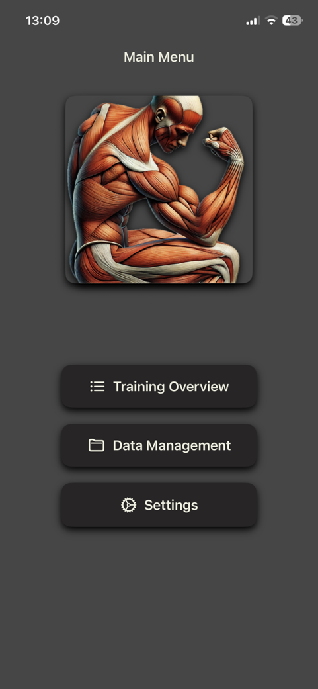
Main App Paths
Training Overview: Plan and start workouts.Data Management: Review history and progress.Settings: Configure design, units, and subscription.
Recommended First Steps
- Set units and design in settings.
- Create your first training session.
- Review the recorded data right after training.
Settings and Subscription
Settings
Path: Main Menu -> Settings
Use settings to personalize Gymmix.
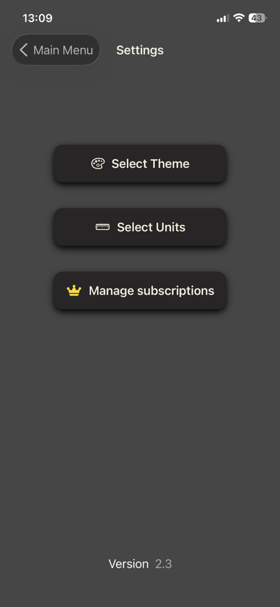
Customize Design
Path: Settings -> Select Theme
Choose your preferred app color theme.
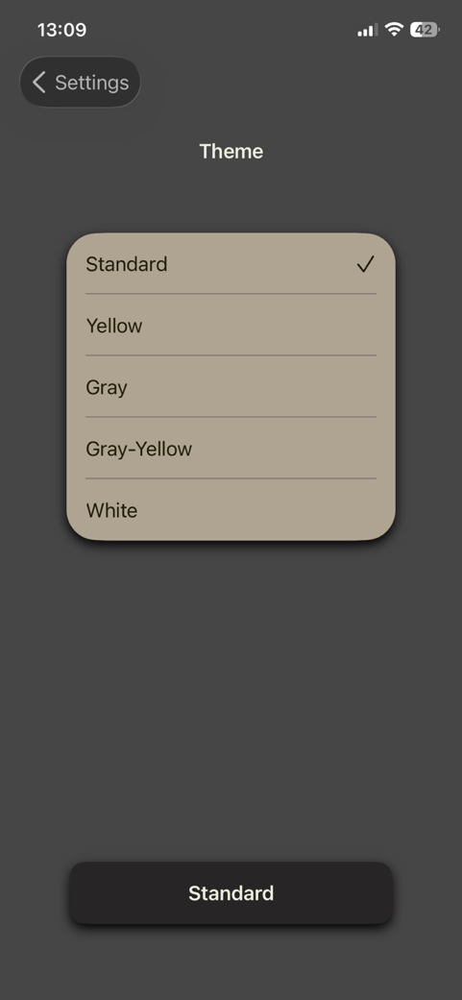
Select Units
Path: Settings -> Select Units
Set global measurement units, for example:
- kg or lbs
- cm or in
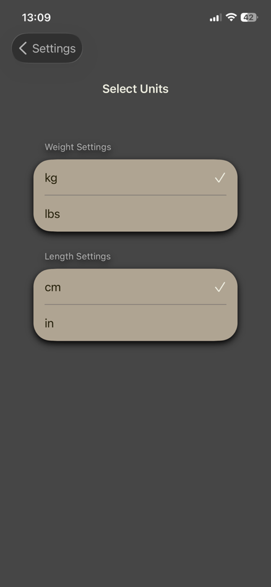
Gymmix Subscription
Path: Settings -> Manage subscriptions
Manage your subscription and unlock pro features.
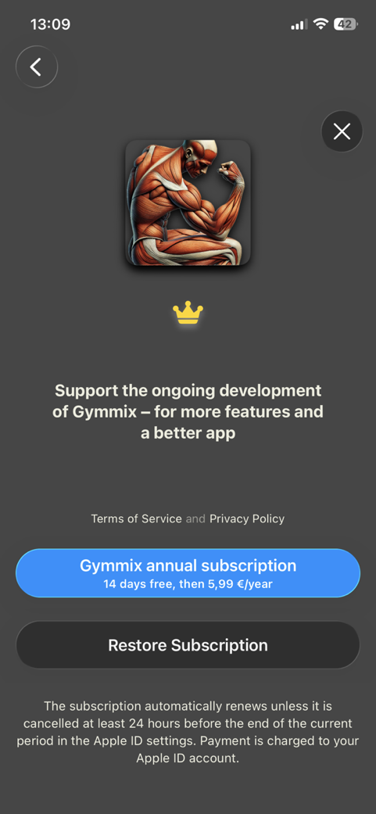
Data and Statistics
Data Management
Path: Main Menu -> Data Management
All progress data is grouped into three areas:
- Body Data
- Archived Trainings
- Statistics
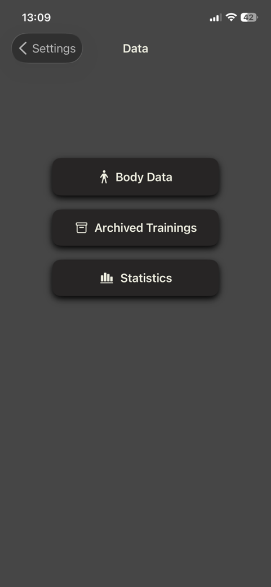
Statistics and Analysis
Path: Data Management -> Statistics
Charts provide an overview of:
- Body metrics over time
- Training values over time
This helps you identify trends and track long-term progress.
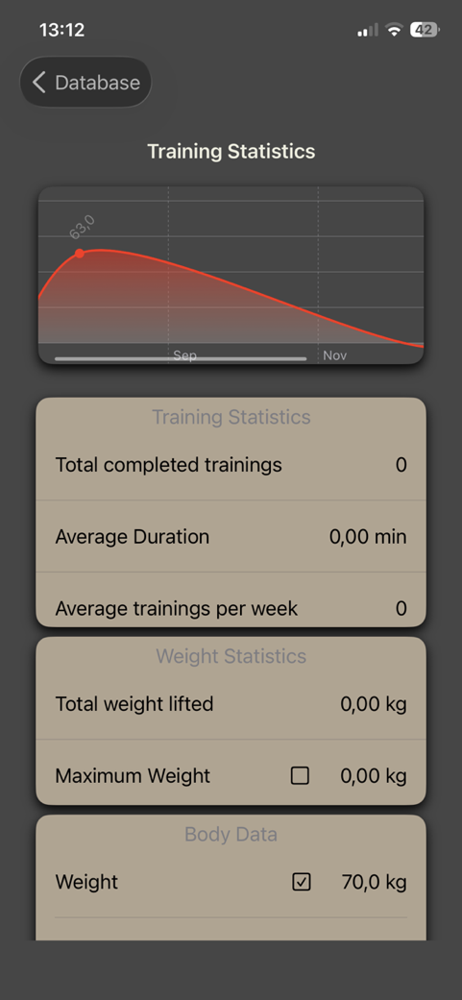
Archived Trainings
Path: Data Management -> Archived Trainings
The archive acts as your training journal:
- Review previous sessions
- Compare workout blocks
- Track consistency and motivation
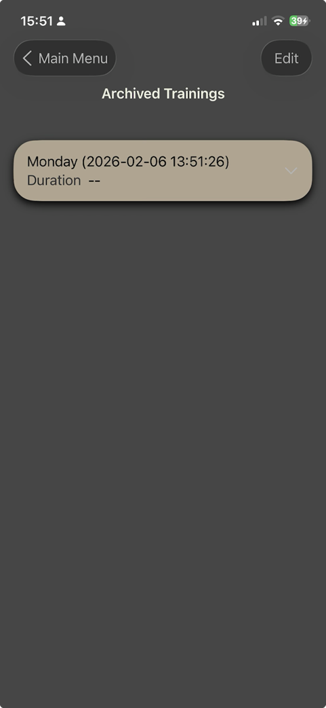
Training
Training Overview
Path: Main Menu -> Training Overview
This screen is where you plan and manage your weekly workouts.
Add Training: Create a new workout.Edit Mode: Reorder, rename, or delete training days.
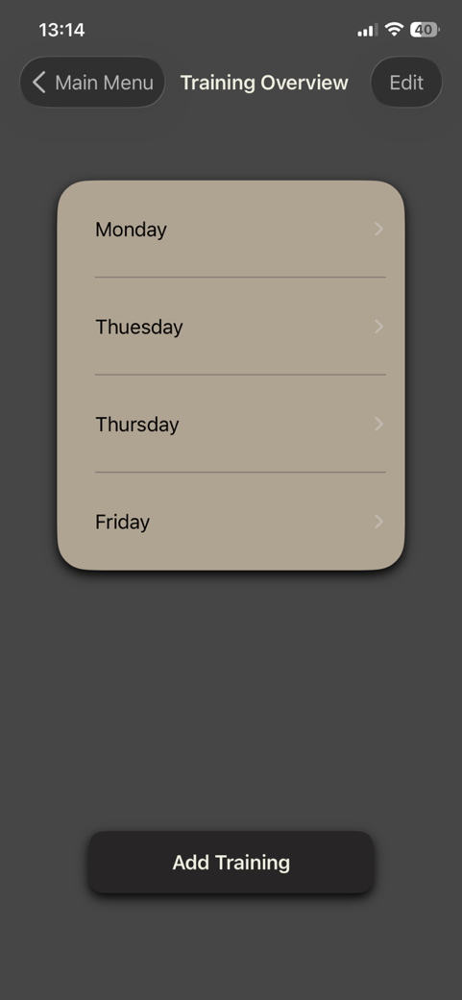
Create a New Workout
Path: Training Overview -> Add Training
On this screen, you can:
- Set a workout name.
- Add movements from the exercise library.
- Finish and save using
End Training.
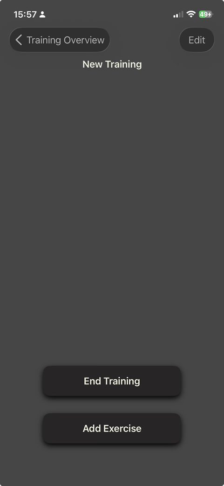
Select from the Exercise Library
Path: Training setup -> Add Exercise
The library includes more than 110 exercises. Use:
- Equipment filter (
Sorticon, top right) - Multi-level body-part sorting
Custom Exercisefor your own entries
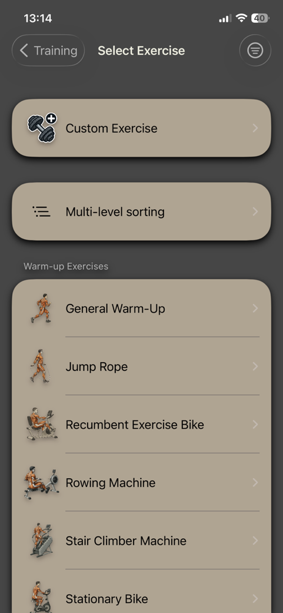
Equipment Filter (Sort)
Filter all exercises by available equipment:
- Weights
- Machines
- Body Weight
Extra: Rename the current workout session, for example Heavy Chest Day.
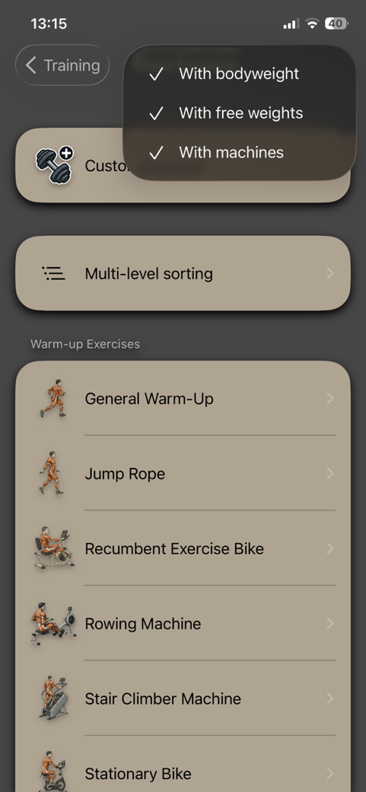
Multi-Level Sorting (Body Parts)
Exercises are grouped by muscle group so you can find relevant movements faster.
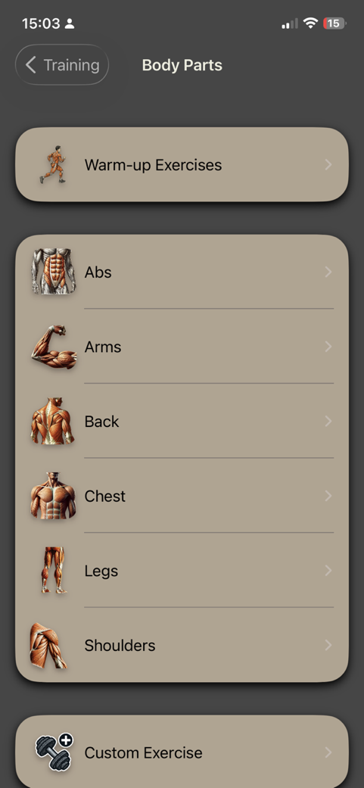
Select a Movement
Select a specific movement from the list, for example Dumbbell Fly.
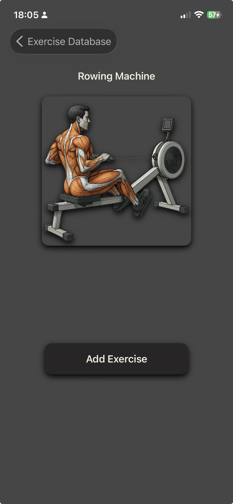
Add a Custom Exercise
Use Custom Exercise when a specific variation is missing from the standard library.
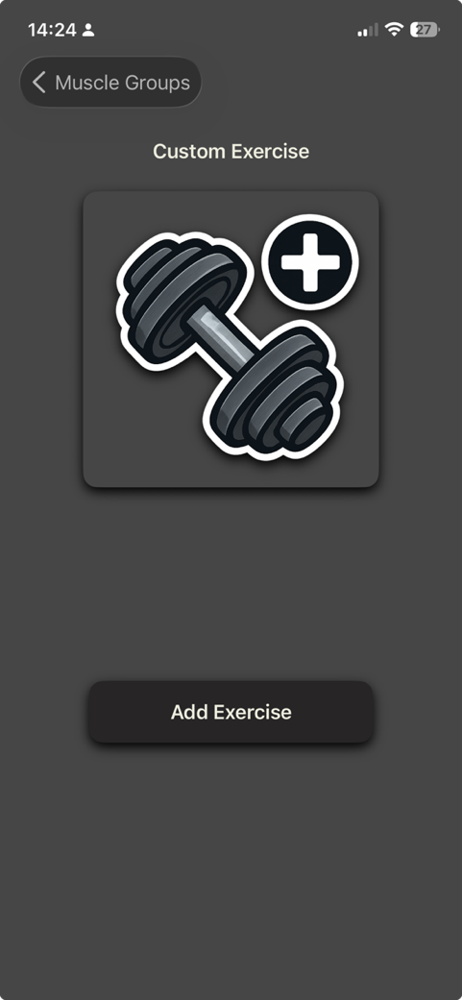
Exercises and Timer
Active Exercise View
Path: Training -> select an exercise (for example Dumbbell Fly)
In the active view, you can:
- Track sets
- Add additional sets
- Save notes
- Adjust weight and reps
- Mark the exercise as complete

Timer
Path: Active exercise -> tap the time value at the top center
The timer helps you manage rest time between sets:
- Set a new timer
- Stop a running timer

Exercise Notes
Path: Active exercise -> Notes
Use notes for:
- Bench or seat settings
- Tempo and form reminders
- Daily condition or pain notes
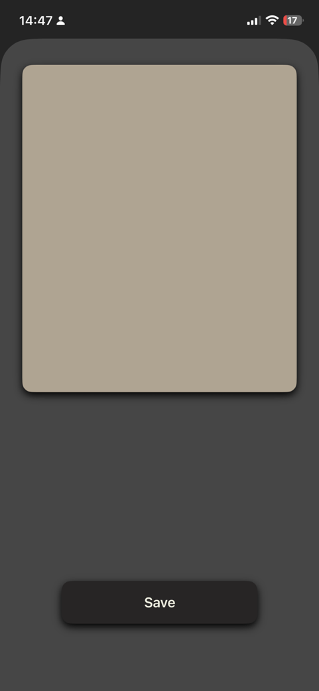
Detailed Set Settings
Path: Active exercise -> center card (Weight/Reps)
Configure:
- Reps (plus/minus)
- Quality rating (stars)
- Weight
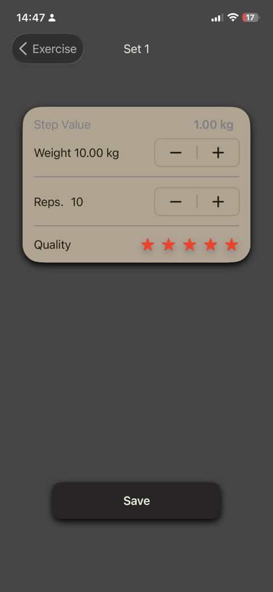
Weight and Step Value
Path: Set settings -> weight value
You can:
- Enter exact weight
- Define
Step Value, for example 1.00 kg per click
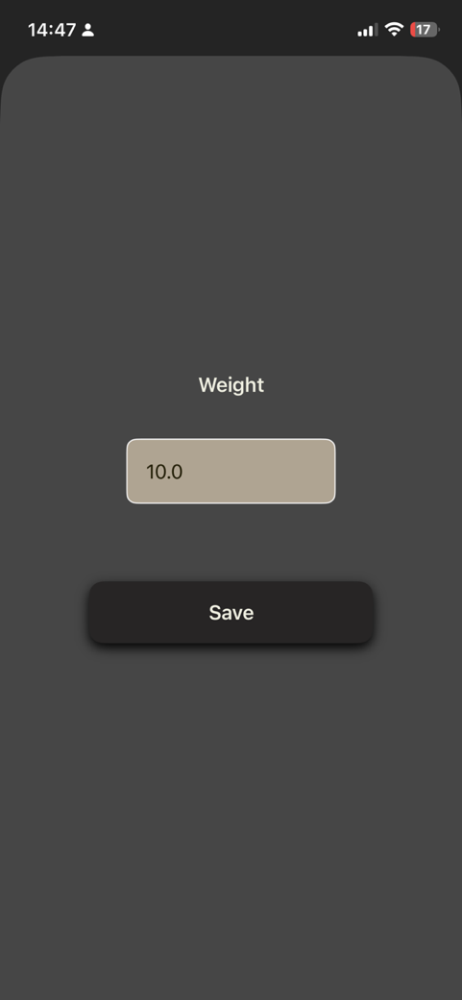
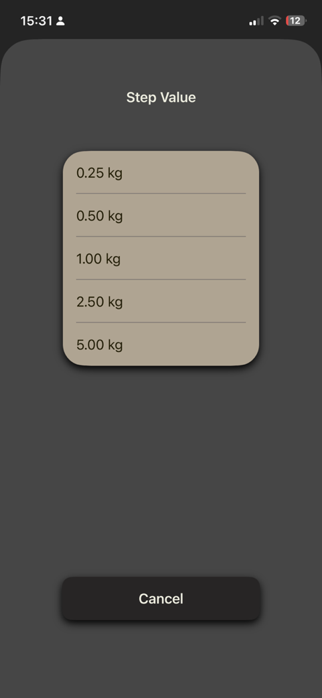
FAQ
How do I start my first workout?
Open Training Overview, tap Add Training, choose exercises, and start the session.
Where can I change weight units?
Go to Settings -> Select Units.
Where can I see completed workouts?
Go to Data Management -> Archived Trainings.
Can I add my own exercises?
Yes, use Custom Exercise in the exercise picker.
What is Step Value?
Step Value defines how much weight changes on each plus/minus tap.
Screenshots
All screenshots in one place: